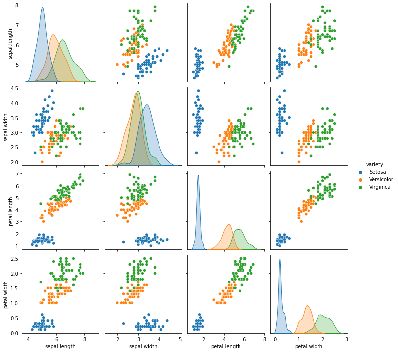

Iris dataset exploration.
Use summary statistics and visual exploration to reveal patterns in the Iris dataset.

What I built
Created a Python analysis script and notebook to summarize Iris measurements and explore relationships between features and species.
Why it matters
Before choosing a model, it helps to see how measurements vary and which features reveal useful structure. Clear exploratory analysis makes a dataset easier to understand.
How it works
- 01
Load the included Iris CSV and inspect its structure.
- 02
Calculate descriptive statistics and compare feature distributions.
- 03
Explore relationships with scatter plots, pair plots and correlations.
What it demonstrates
Data preparation, exploratory analysis, reproducible notebooks and selecting visuals that explain a pattern.
Evidence, with context.
The corrected notebook executed all 25 code cells. Case-sensitive CSV loading and numeric-only correlations now work in the tested environment.


Scope and limitations
A small, well-known teaching dataset. Visible separation in petal measurements is an exploratory observation, not proof of performance on new datasets. The notebook’s classifier examples are educational extensions.
Visual provenance and source attribution are recorded in the evidence register ↗.
Under the surface.
Architecture, methods and improvements
Fixed Iris.csv to iris.csv for case-sensitive filesystems and restricted correlations to numeric columns for current pandas behavior. Seeded and stratified the training split. Original script, figures and sources remain available.
Try it locally
Install requirements.txt and open Project.ipynb from the repository root, or run analysis.py to produce the original summaries and histograms.
The portfolio is a static GitHub Pages site. Server applications run locally; the portfolio does not collect bookings, credentials or payments.